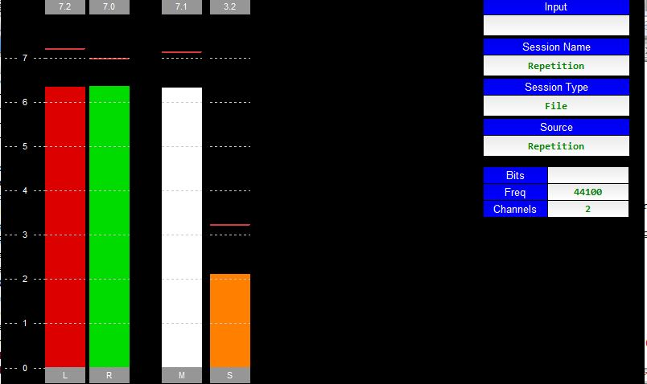
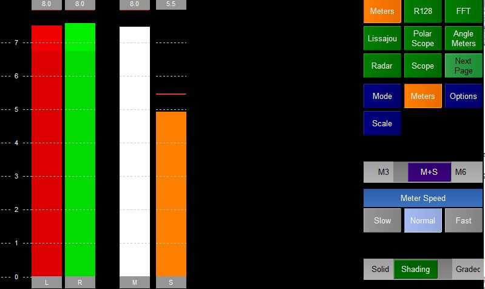
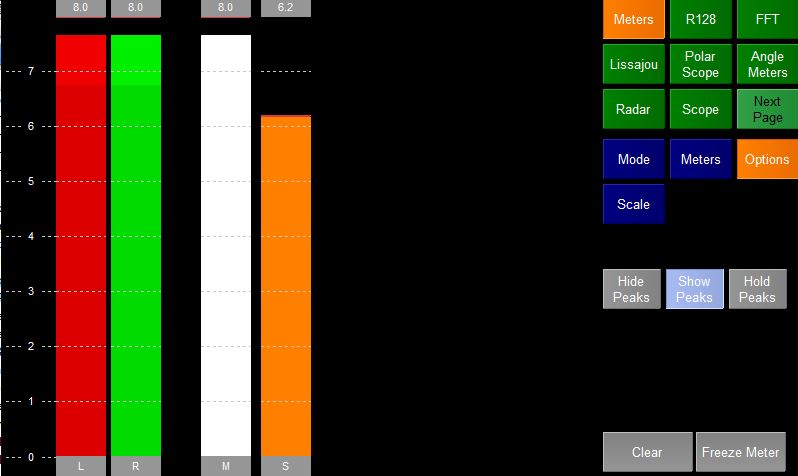

The Meters plugins shows a selection of basic audio meters.
In full screen mode the plugin shows the meters on the left and some information about the session being monitored on the right.
If stereo is being monitored then the meters shown are
In multichannel mode a meter is shown for each channel.
There are a number of possible meter modes which can be selected by pressing the Mode Option Selection button.
Each mode will change the scale and ballistics of the meter. New modes can be created by editing ppmtypes.xml
Meters

The Meters Options let you

Allows the user to change how the Peak lines are displayed
The user can also Clear the meter which resets the peaks etc
Freeze the Meter which as it says will freeze the display.